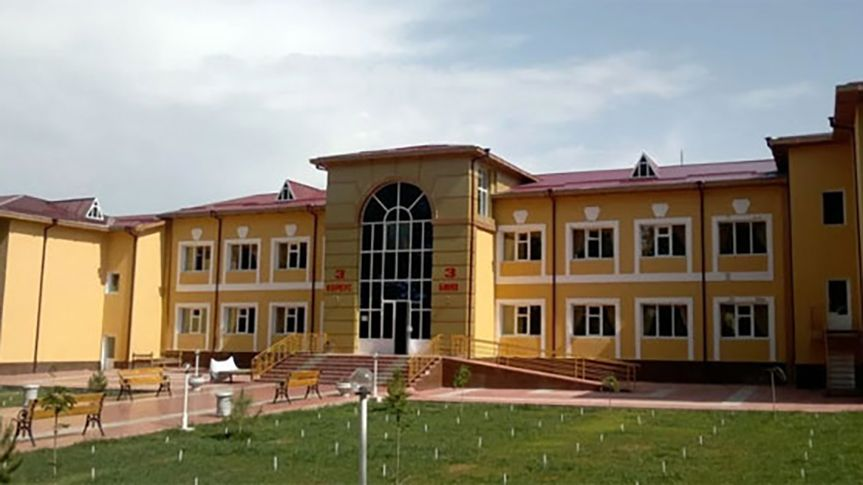

Aholi, 2026-yil boshiga
Namangan viloyati · Farg‘ona vodiysi
Chortoq: shifo, mehnat va bunyodkorlik maskani
Chortoqsoy vodiysi, mineral suvlari, bog‘lari va aholisi bilan tanilgan tuman haqida asosiy ma’lumotlar.
Chortoq tumani haqida ochiq ma’lumotlar to‘plami.

Chortoq sanatoriysiChortoqsoy vodiysi
223 ming+doimiy aholi
1950tuman tashkil topgan
Tuman hududi
Namangan shahridan sanatoriygacha
Sanatoriy joylashgan balandlik
Tuman haqida
Farg‘ona vodiysining shimoliy-sharqidagi tuman
Chortoq tumani Namangan viloyatining shimoliy-sharqida, Chatqol tizmasining janubiy etaklarida joylashgan. Tuman markazi Chortoq shahri. Hudud g‘arbda Yangiqo‘rg‘on, janub va janubi-sharqda Uychi tumani, shimol va sharqda Qirg‘iziston Respublikasi bilan chegaradosh.
"Chortoq" nomi forscha "chor" (to‘rt) va turkiy "toq" (tepalik) so‘zlaridan kelib chiqqan bo‘lib, shahardagi qadimiy to‘rtta mudofaa tepaligiga ishora qiladi. Tarixiy manbalarda Chortoq milodiy II asrlardan tilga olinadi, 1976-yilda esa shahar maqomini olgan.
Hududdan Chortoqsoy va Namangansoy (Pochchaotasoy) oqib o‘tadi. Ma’muriy tarkibiga Chortoq shahri, Qoroskon shaharchasi hamda Alixon, Bog‘iston, Gulshan, Muchum, Oyqiron, Peshqo‘rg‘on, Saroy, Hazratishoh kabi qishloq hududlari kiradi.
Ma’muriy markaz
Chortoq shahri
Hunarmandchilik, savdo, ta’lim va xizmatlar jamlangan tuman markazi.
41.07° N, 71.82° E
Namangan shahridan sharq tomonda, tog‘ oldi hududida.
Suv, bog‘ va adirlar
Chortoqning tabiiy va iqtisodiy qiyofasini belgilovchi uch tayanch.
Chortoq salohiyati
Tuman iqtisodiyoti va hayotining to‘rtta yo‘nalishi
Mineral suvlar, bog‘dorchilik, tabiat va mahalliy tadbirkorlik.
01
Shifobaxsh suvlar
Chortoq mineral suvlari va balneologik muolajalari tumanni O‘zbekistondagi mashhur sog‘lomlashtirish manzillaridan biriga aylantirgan.
02
Bog‘ va issiqxonalar
Meva-sabzavotchilik, uzumchilik va intensiv bog‘lar hudud iqtisodiy qiyofasining muhim qismidir.
03
Turizm va tabiat
Chortoqsoy vodiysi, tog‘ oldi havosi va yashil maskanlar oilaviy sayohat hamda ekoturizm uchun qulay muhit yaratadi.
04
Mehnatkash hamjamiyat
Mahalla, tadbirkor va yoshlar tashabbuslari Chortoqning kundalik hayoti va kelajak taraqqiyotida katta o‘rin tutadi.
Muhim bosqichlar
Chortoq tarixi va buguni
Hudud tarixi tabiiy boyliklar, dehqonchilik an’analari va zamonaviy infratuzilma bilan bog‘liq.
Mashhur maskanlarni ko‘rish →Chortoq tumani tashkil etildi
15-aprel kuni Namangan viloyati tarkibida alohida tuman sifatida shakllandi.
Sanatoriy va mineral suvlar shuhrati
Chortoqsoy vodiysidagi balneologik kurort respublika bo‘ylab tanila boshladi.
Kompleks rivojlanish bosqichi
Yo‘l, ichimlik suvi, ijtimoiy obyektlar, bog‘dorchilik va xizmatlar yo‘nalishida yangi loyihalar boshlandi.
Turizm va mahalliy ishlab chiqarish
Tumanda sanatoriy xizmatlari, mineral suv ishlab chiqarish va qishloq xo‘jaligi eksporti kengaymoqda.
Ko‘rishga arziydigan yo‘nalishlar
Chortoqda borib ko‘rish mumkin bo‘lgan joylar
Sayohatni boshlash uchun qisqa yo‘l-yo‘riq. Xizmatlar va ish vaqtlarini safardan oldin tekshiring.
Sog‘lomlashtirish
"Chortoq" sanatoriysi
Chortoqsoy vodiysida, Namangan shahridan qariyb 25 km masofada va dengiz sathidan 650 metr balandlikda joylashgan balneologik-iqlimiy kurort.
- Mineral suv va balneologik muolajalar
- Yashil hudud va tog‘ oldi havosi
- Davolanish va sokin dam olish imkoniyati
Tabiat
Chortoqsoy vodiysi
Chortoq tumani markazi va sanatoriy hududidan o‘tuvchi soy vodiysi.
Agroturizm
Bog‘lar va issiqxonalar
Mahalliy meva-sabzavotlar, uzumchilik va dehqonchilik madaniyati bilan tanishish uchun jonli yo‘nalish.
Oila bilan
Furqat madaniyat bog‘i
Yangilanayotgan infratuzilma, yashil hudud va oilaviy hordiq uchun mo‘ljallangan shahar maskani.
Chortoq blogi
Chortoq haqida batafsil maqolalar
Tuman tarixi, mineral suvlar tarkibi, ziyoratgohlar va iqtisodiyot bo‘yicha alohida sahifalarga bo‘lingan tahliliy maqolalar. Barcha maqolalar →
Chortoq tarixi va nomi: milodiy II asrdan 1976-yilgacha
So‘g‘d davri ildizlari, "to‘rt tepalik" atamasining kelib chiqishi, 1950-yilgi tuman tashkil topishi va ma’muriy hududlar.
Maqolani o‘qish →Chortoq sanatoriysi va mineral suvi: quduqlar va tarkib
1947-yilgi geologik kashfiyot, 507 m va 1600 m chuqurlikdagi suvlar farqi, yod-brom tarkibi va davolash yo‘nalishlari.
Maqolani o‘qish →Sulton Uvays Qaroniy va Baliqli ko‘l ziyoratgohi
Tuman markazidan 35 km masofadagi ziyorat majmuasi, Bibi Naima ona maqbarasi, 1400 o‘rinli masjid va sayyohlik sharoitlari.
Maqolani o‘qish →Chortoq iqtisodiyoti: intensiv bog‘lar va eksport
Chortoq shaftolisi va uzumchiligi, Chortoq Mineral Water zavodining 15 dan ortiq davlatga eksporti va sanoat tarmoqlari.
Maqolani o‘qish → Ko‘p so‘raladigan savollar
Chortoq bo‘yicha qisqa javoblar
Chortoq tumani qachon tashkil topgan va markazi qayer?
Chortoq tumani 1950-yil 15-aprelda tashkil etilgan. Tuman markazi Chortoq shahri bo‘lib, unga 1976-yilda shahar maqomi berilgan.
Chortoq mineral suvi qayerdan chiqadi va tarkibi qanday?
Chortoqsoy vodiysida 1947-1948-yillarda neft qidirish vaqtida topilgan. 507 m chuqurlikdan +32..+34 °C ichimlik mineral suvi, 1200-1600 m chuqurlikdan esa +44..+55 °C yod-bromli termal suv olinadi.
Sulton Uvays Qaroniy ziyoratgohi qayerda joylashgan?
Ziyoratgoh Chortoq tumani markazidan qariyb 35 km uzoqlikdagi Baliqli ko‘l qishlog‘ida joylashgan.
Chortoq tumani iqtisodiyoti nimaga ixtisoslashgan?
Hudud iqtisodiyoti intensiv bog‘dorchilik (shaftoli, gilos, olcha, uzum), Chortoq Mineral Water kabi sanoat korxonalari hamda sanatoriy va ziyorat turizmiga asoslangan.
Joylashuv
Chortoq xaritada
Chortoq Farg‘ona vodiysining shimoliy-sharqiy qismida, Namangan shahridan sharqda joylashgan. Tog‘ oldi hududi bo‘lgani uchun tabiat manzarasi tekislik va adirlarning uyg‘unligidan iborat.
ViloyatNamangan
Vaqt mintaqasiUTC +5
MarkazChortoq shahri
ChortoqNamangan viloyati
Sun’iy yo‘ldosh arxivi
Chortoqning yillar bo‘yicha sun’iy yo‘ldosh ko‘rinishi
2014-yildan 2026-yilgacha bo‘lgan tarixiy sun’iy yo‘ldosh tasvirlarini sahifadan chiqmasdan solishtiring. 1984-yildan boshlangan 3D tasvirlar uchun Google Earth havolalari ham berilgan.
Chortoqliklar hamjamiyati
Chortoq haqidagi ma’lumotlarni to‘ldiring
Mahalla tarixi, eski surat, mahalliy tadbirkor yoki sayyohlik manzili haqida ma’lumotingiz bo‘lsa, loyihaga qo‘shiling.